이 단원은 만화 스타일(comic style)로 작품을 만드는 과정을 처음부터 끝까지 배우는 수업이다. 먼저 스케치북 표지를 자기 개성이 드러나게 꾸미고, 미술에서 평가기준(Assessment Objectives, AO) 네 가지가 무엇인지 익힌다. 이 단원의 인성 덕목(Character Virtue)은 호기심(Curiosity)이다.
평가기준 네 개는 각각 25점씩 총 100점이다. AO1은 참고 사진과 얼마나 정확하게(accurate) 그렸는지, 그리고 여러 곳(인터넷·친구·상상)에서 영감을 얻었는지를 본다. AO2는 재료를 다양하게 썼는지, 명암(shading)이나 블렌딩(blending) 같은 기법을 잘 썼는지를 본다. AO3는 창의성으로 나만의 새로운 아이디어를 냈는지, AO4는 작품을 깔끔하고 알아보기 쉽게 정리했는지를 본다. 스스로 평가(self assessment)와 친구 평가(peer assessment)를 하며 WWW(잘된 점)와 EBI(더 나아질 점)를 적는다.
작업 순서는 1·2차시 — 작가 조사(Artist Research)와 샘플부터다. 만화 스타일 작가 한 명을 골라 대표작 3~4점을 구글 슬라이드에 모으고(15분 안에), 그 작가 스타일을 최대한 똑같이 따라 그린 샘플 2점을 만든다. 자료에 나온 작가 예시는 Roy Lichtenstein(인쇄 망점과 단색 블록을 그대로 흉내낸 팝아트(Pop Art)로 1950~60년대 미국 소비사회를 풍자), Jack Kirby(캡틴 아메리카·판타스틱 포·엑스맨·헐크 등을 만든 만화의 왕), Alex Maleev다. 팁으로, 원본과 비슷한 재료를 쓰되 샘플마다 다른 재료를 쓰고, 색을 칠하기 전에 색 견본(colour swatch)으로 색을 먼저 맞춰 보라고 한다.
다음은 1차 조사(Primary Research)다. 1차 자료란 남의 그림이 아니라 내가 직접 만든 증거 — 내가 찍은 사진, 갤러리에서 본 실물 작품 같은 것이다. 고른 작가의 작품 분위기에 맞는 사진 3~4장을 직접 찍는데(사람·물건·풍경·건물·음식 등), 좋은 사진의 조건은 선명하고 자세할 것, 밝을 것, 여러 각도에서 볼 것, 인물이 화면을 꽉 채울 것, 주제에 맞는 포즈일 것이다. 그중 2장을 골라 하나는 사진 그대로 똑같이 그리고, 다른 하나는 내 작가 스타일로 바꿔 그린다.
마지막은 발전(Development)과 최종 작품(Final Piece)이다. 작가 스타일과 내 사진을 합쳐 발전 작품 2점을 만드는데, 하나는 A6 크기, 하나는 A5 크기다. 발전 작업 요령은 작게 시작해 아이디어를 많이 시도하고, 대안 디자인도 만들어 보고, 실제 크기 작업도 해 보는 것이다. 이때 구도(composition)도 배우는데, 사물을 겹치고 그림자를 넣어 깊이감을 만들기, 전경·중경·배경(foreground, middleground, background) 나누기, 위에서 내려다보거나 벌레 눈높이(worm's eye view) 같은 재미있는 시점 쓰기, 원근과 크기(perspective and scale) 조절하기, 색·모양·질감의 균형 잡기(아래에 빨강이 있으면 위쪽에도 작게 빨강을 두는 식)가 핵심이다.
✍️ 꼭 알아야 하는 것
- 평가기준 네 가지가 각각 무엇을 보는지 구분할 것 — AO1은 정확성과 영감의 출처, AO2는 재료와 기법, AO3는 창의성, AO4는 정리 상태이며 각 25점씩 총 100점이다.
- 작업 순서를 외울 것 — 작가 조사 → 샘플 → 1차 조사(직접 찍은 사진) → 발전 작품 → 최종 작품. 1차 조사(primary research)는 내가 직접 만든 자료, 작가 조사(secondary research)는 남이 만든 자료라는 차이가 핵심이다.
📚 이 자료의 핵심 단어
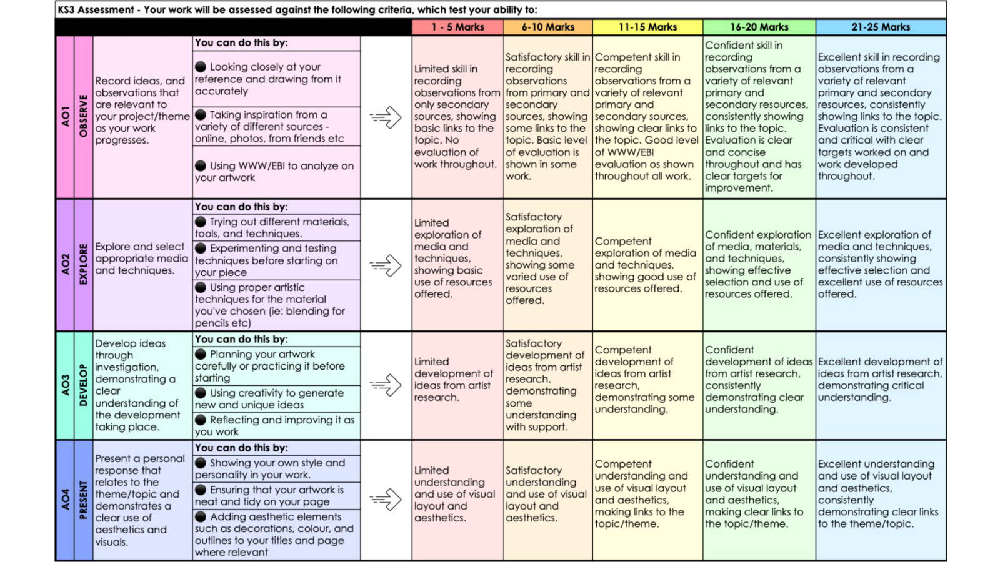
1쪽 · 만화 예술 표지
Y9 Term 1 - Comic Art 자료의 첫 쪽이다.
이 쪽은 만화 예술(Comic Art) 단원의 시작 쪽이다.
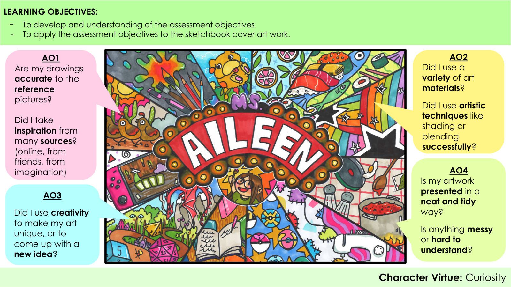
2쪽 · 평가 기준(AO) 알아보기
AO4
내 작품이 깔끔하고 단정하게 제시되었는가?
지저분하거나 이해하기 어려운 부분이 있는가?
AO3
내 작품을 독특하게 만들거나 새로운 아이디어를 떠올리는 데 창의성을 사용했는가?
AO2
다양한 미술 재료를 사용했는가?
명암이나 블렌딩 같은 미술 기법을 성공적으로 사용했는가?
AO1
내 그림이 참고 그림과 정확하게 일치하는가?
여러 출처에서 영감을 얻었는가? (온라인, 친구, 상상)
학습 목표:
- 평가 목표에 대한 이해를 기른다
- 평가 목표를 스케치북 표지 작품에 적용한다
평가 목표는 AO1~AO4 네 가지다. AO1은 참고 그림과의 정확성과 영감의 출처, AO2는 재료의 다양성과 명암·블렌딩 같은 기법, AO3은 창의성과 새로운 아이디어, AO4는 깔끔한 제시를 본다.
이 쪽의 학습 목표는 평가 목표를 이해하고, 그것을 스케치북 표지 작품에 실제로 적용하는 것이다. 이 쪽의 인성 덕목은 호기심이다.
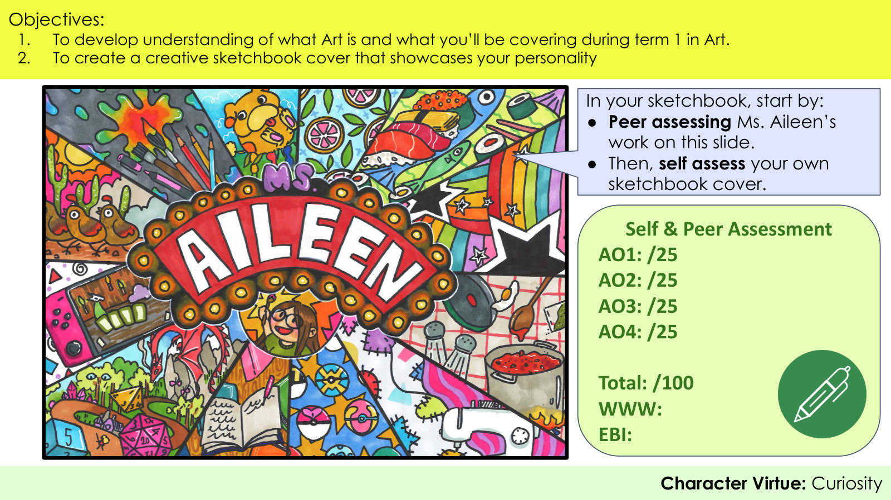
3쪽 · 학습 목표와 자기·동료 평가
1. 미술이란 무엇인가, 그리고 1학기 미술 시간에 무엇을 배우는지 이해를 넓힌다.
2. 자신의 개성이 드러나는 창의적인 스케치북 표지를 만든다.
인성 덕목: 호기심
스케치북에 다음부터 시작한다.
● 이 슬라이드에 있는 Aileen 선생님의 작품을 동료 평가한다.
● 그다음 자신의 스케치북 표지를 자기 평가한다.
자기·동료 평가
AO1: /25
AO2: /25
AO3: /25
AO4: /25
합계: /100
WWW(잘한 점):
EBI(더 좋아지려면):
이 단원의 목표는 미술이 무엇인지 이해하는 것과, 개성이 드러나는 스케치북 표지를 만드는 것 두 가지다.
평가는 AO1~AO4 각 25점씩 총 100점이며, 선생님 작품을 동료 평가한 뒤 자기 표지를 자기 평가하는 순서로 한다.
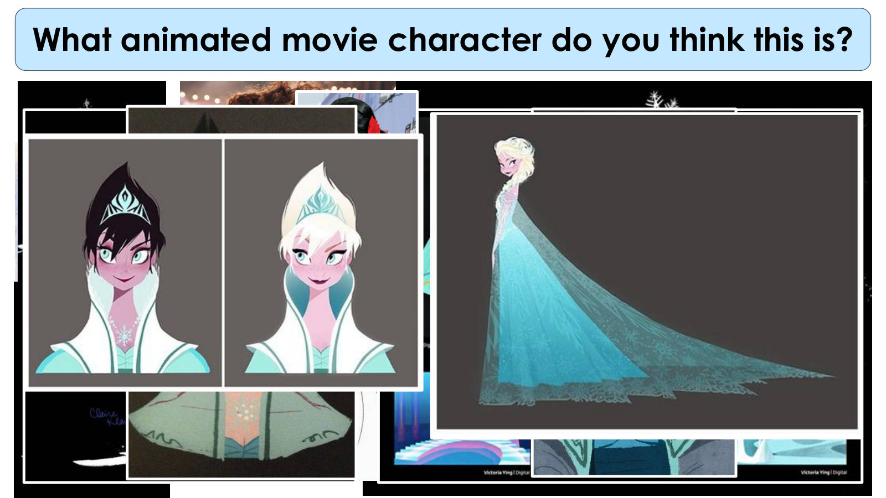
4쪽 · 이 캐릭터는 누구일까
애니메이션 캐릭터 그림을 보고 누구인지 알아맞히는 질문이다
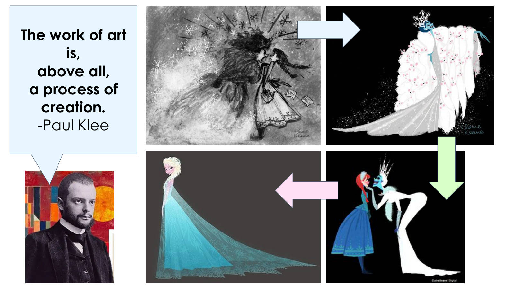
5쪽 · 예술은 창조의 과정이다
무엇보다도,
창조의 과정이다.
-폴 클레
화가 폴 클레의 말을 인용한 쪽이다.
작품을 결과물이 아니라 만들어 가는 과정으로 본다는 뜻이다.

6쪽 · 작품집 평가 항목
Artist Personal Development — 작가 개인 발전
Primary Research — 1차 조사
Annotation — 주석
Artist Samples — 작가 작품 예시
Artist Research/Secondary Research — 작가 조사 / 2차 조사
Development Final Piece — 최종 작품으로의 발전
Variety of Media Used — 사용한 재료의 다양성
이 쪽은 작품 보드에 들어가야 할 항목들을 나열한 목록이다.
조사는 1차 조사(Primary)와 2차 조사(Secondary/작가 조사) 둘로 나뉜다.
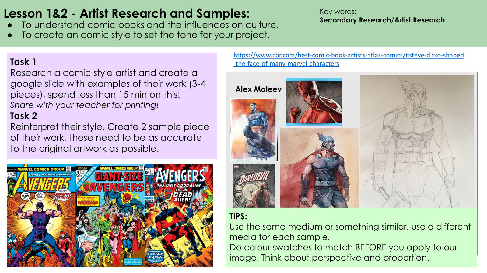
7쪽 · 과제 1·2 — 작가 조사와 모작
만화 스타일의 작가를 한 명 조사하고, 그 작가의 작품 예시 3~4점을 담은 구글 슬라이드를 만든다.
이 작업에는 15분 이내만 쓴다!
인쇄할 수 있도록 선생님과 공유한다!
Task 2
그 작가의 스타일을 재해석한다. 그 작가 작품의 샘플 2점을 만들되, 원작에 최대한 똑같이 만들어야 한다.
https://www.cbr.com/best-comic-book-artists-atlas-comics/#steve-ditko-shaped-the-face-of-many-marvel-characters
Alex Maleev
1·2차시 — 작가 조사와 샘플:
만화책과 그것이 문화에 끼친 영향을 이해한다.
프로젝트의 분위기를 정할 만화 스타일을 만든다.
핵심 낱말: 2차 조사(Secondary Research) / 작가 조사(Artist Research)
팁:
같거나 비슷한 재료를 쓰되, 샘플마다 다른 재료를 쓴다.
그림에 칠하기 전에 먼저 색 견본을 만들어 색을 맞춘다.
원근과 비례를 생각한다.
과제는 두 개다 — 작가 조사 슬라이드(3~4점, 15분 안에)와 그 작가 스타일 샘플 2점 만들기다.
샘플은 원작에 최대한 가깝게 그리되 샘플마다 다른 재료를 쓰고, 칠하기 전에 색 견본으로 색을 먼저 맞춘다.
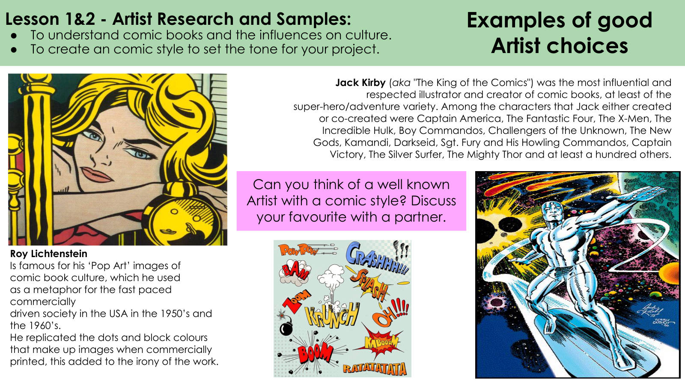
8쪽 · 팝아트와 만화의 대가들
만화책 문화를 다룬 '팝아트' 이미지로 유명하다.
그는 만화를 1950년대와 1960년대 미국의 빠르게 돌아가고 상업적으로 움직이는 사회에 대한 은유로 사용했다.
그는 상업 인쇄로 찍을 때 이미지를 이루는 점(dot)과 단색 면(block colour)을 그대로 재현했고, 이것이 작품의 아이러니를 더했다.
잭 커비('만화의 왕'이라고도 불린다)는 적어도 슈퍼히어로·모험 만화 분야에서 가장 영향력 있고 존경받는 삽화가이자 만화 창작자였다.
그가 만들거나 공동으로 만든 캐릭터로는 캡틴 아메리카, 판타스틱 4, 엑스맨, 인크레더블 헐크, 보이 코만도스, 챌린저스 오브 디 언노운, 뉴 갓즈, 카만디, 다크사이드, 퓨리 상사와 하울링 코만도스, 캡틴 빅토리, 실버 서퍼, 마이티 토르 등 최소 백 명이 넘는 캐릭터가 있다.
만화 스타일을 가진 유명한 작가를 떠올릴 수 있는가? 짝과 함께 가장 좋아하는 작가를 이야기해 보자.
1~2차시 - 작가 조사와 예시:
만화책과 그것이 문화에 끼친 영향을 이해한다.
프로젝트의 분위기를 정할 나만의 만화 스타일을 만든다.
좋은 작가 선택의 예시
리히텐슈타인은 상업 인쇄의 점과 단색 면을 일부러 따라 그려, 빠르고 상업적인 미국 사회를 비꼬는 아이러니를 만들었다.
잭 커비는 캡틴 아메리카·엑스맨·헐크·실버 서퍼 등 백 명이 넘는 캐릭터를 만들거나 공동 창작한 슈퍼히어로 만화의 대표 작가다.
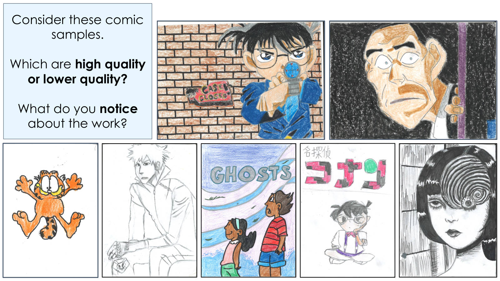
9쪽 · 만화 샘플 살펴보기
어느 것이 수준 높은 작품이고 어느 것이 수준 낮은 작품인가?
그 작품에서 무엇이 눈에 띄는가?
여러 만화 샘플을 보고 품질이 높은 것과 낮은 것을 가려내는 활동이다.
무엇이 좋고 나쁜지 이유를 찾아 말할 수 있어야 한다.
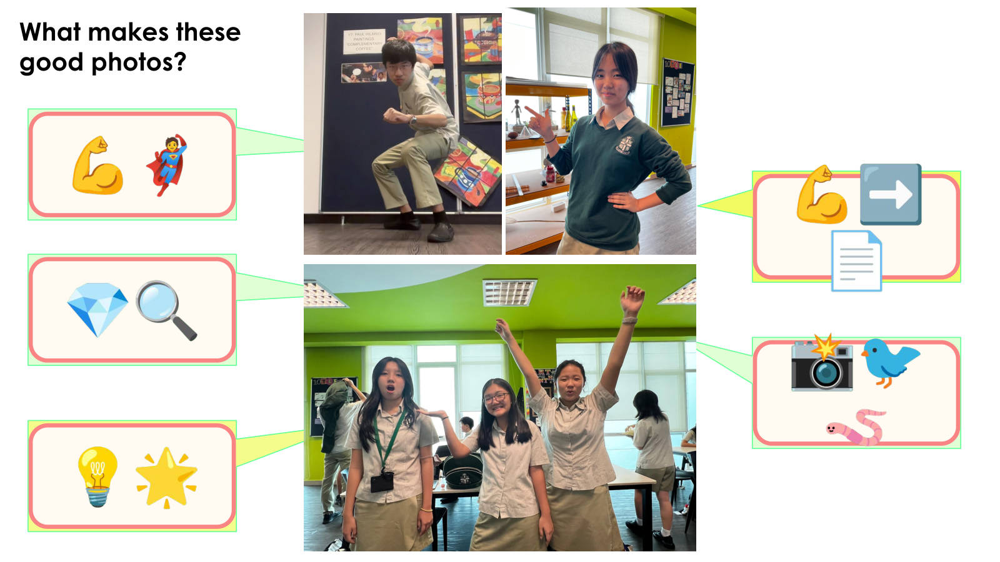
10쪽 · 좋은 사진의 조건
선명하고 자세하다
밝게 조명이 들어온다
여러 각도를 고려한다
포즈가 이미지 전체를 채운다
주제에 맞게 포즈를 잡았다
좋은 참고 사진의 조건은 선명함·밝은 조명·다양한 각도·화면을 꽉 채우는 포즈·주제에 맞는 포즈 다섯 가지다
포즈가 화면을 꽉 채워야 하고, 주제(테마)에 어울리게 잡아야 한다
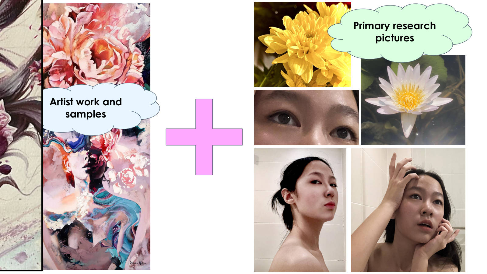
11쪽 · 작가 작품과 1차 자료 조사
1차 조사 사진
작가 작품과 예시 자료를 모아 붙이는 쪽이다
직접 찍은 사진이 1차 조사(primary research) 자료다
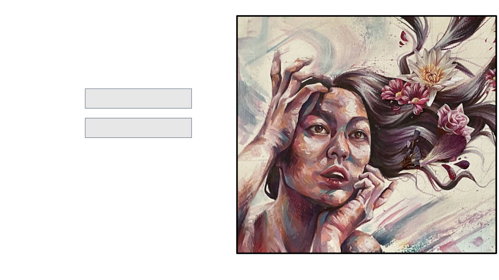
12쪽 · 글자 없는 그림 쪽
글 없이 그림만 있는 쪽이므로 옮길 내용이 없다
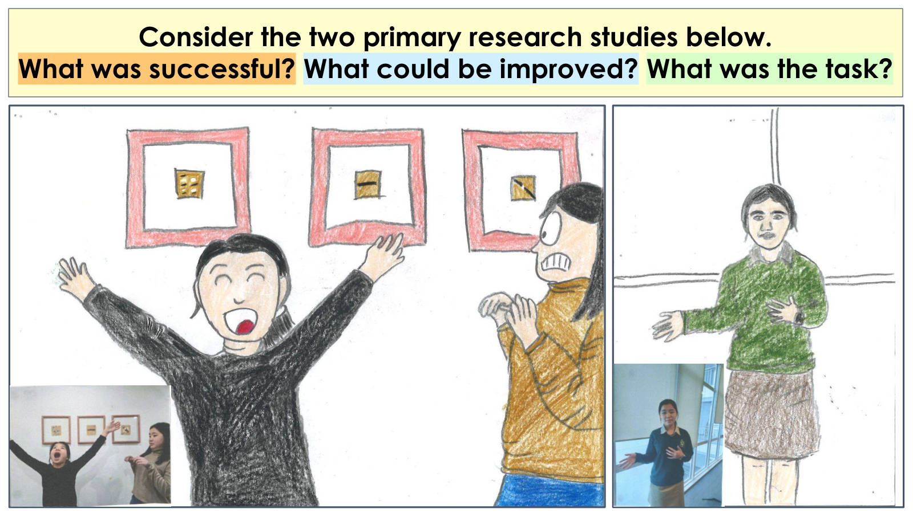
13쪽 · 1차 조사 두 편 살펴보기
무엇이 성공적이었나?
무엇을 개선할 수 있었나?
과제는 무엇이었나?
1차 조사란 남의 자료를 옮긴 것이 아니라 스스로 직접 만들어 본 작업물을 말한다
조사물을 볼 때 성공한 점·개선할 점·주어진 과제 세 가지를 기준으로 평가한다
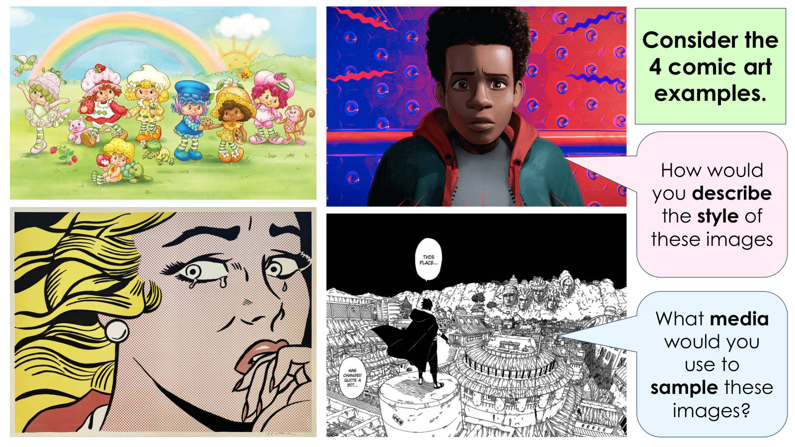
14쪽 · 이미지 스타일과 재료 생각하기
이 이미지들을 샘플링하는 데 어떤 매체(재료)를 사용하겠는가?
4가지 만화 예술 예시를 살펴보라.
앞에 나온 4가지 만화 예술 예시를 보고 그 스타일을 말로 설명해야 한다
그 이미지를 따라 그리거나 옮길 때 어떤 매체(재료)를 쓸지 정해야 한다
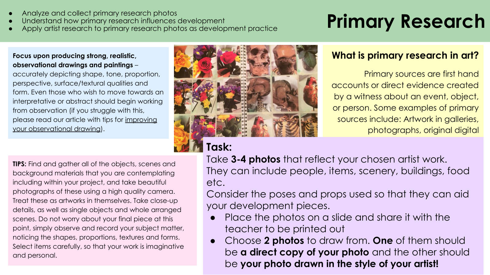
15쪽 · 1차 조사 — 직접 찍고 그리기
강하고 사실적인 관찰 그림과 회화를 만드는 데 집중한다.
형태, 명암, 비례, 원근, 표면과 질감, 입체감을 정확하게 나타낸다.
해석적이거나 추상적인 방향으로 가고 싶은 사람도 관찰에서 시작해야 한다(이것이 어렵다면 관찰 드로잉을 늘리는 요령을 담은 글을 읽어 보라).
요령(TIPS): 프로젝트에 넣을까 생각 중인 물건, 장면, 배경 재료를 모두 찾아 모으고, 좋은 카메라로 아름다운 사진을 찍는다.
이 사진들을 그 자체로 하나의 작품처럼 다룬다.
가까이 찍은 세부, 물건 하나, 배열한 장면 전체를 모두 찍는다.
이 단계에서는 최종 작품을 걱정하지 말고, 그저 대상을 관찰하고 기록하며 형태, 비례, 질감, 입체감을 살핀다.
작업이 상상력 있고 개인적인 것이 되도록 물건을 신중히 고른다.
미술에서 1차 조사란 무엇인가?
1차 자료는 어떤 사건, 물건, 사람에 대해 목격자가 직접 만든 기록이나 증거다.
예를 들면 갤러리에 있는 작품, 사진, 원본 디지털 작업이 있다.
과제(Task): 자신이 고른 작가의 작품이 드러나는 사진을 3~4장 찍는다. 사람, 물건, 풍경, 건물, 음식 등이 들어가도 된다.
발전 작업에 도움이 되도록 자세와 소품을 고려한다.
사진을 슬라이드에 올려 선생님이 인쇄할 수 있게 공유한다.
그중 2장을 골라 그린다. 하나는 사진을 그대로 옮겨 그리고, 다른 하나는 그 사진을 작가의 화풍으로 그린다.
1차 조사 사진을 분석하고 모은다.
1차 조사가 발전 작업에 어떤 영향을 주는지 이해한다.
작가 조사를 1차 조사 사진에 적용해 발전 연습을 한다.
1차 조사는 남의 자료가 아니라 내가 직접 찍고 관찰한 사진·그림이다. 추상으로 가더라도 출발은 관찰이다.
사진은 3~4장 찍어 슬라이드로 공유하고, 그중 2장을 골라 하나는 그대로, 하나는 작가 화풍으로 그린다.
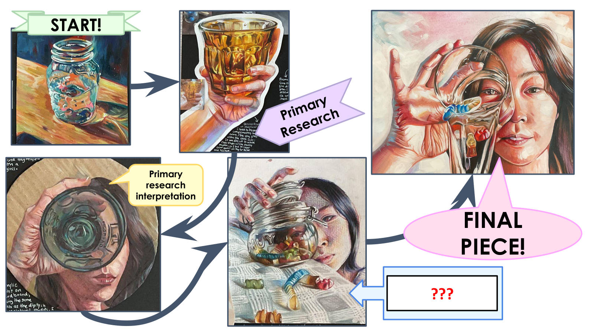
16쪽 · 조사에서 최종 작품까지의 흐름
Primary Research (1차 조사)
Primary research interpretation (1차 조사 해석)
Development (발전시키기)
FINAL PIECE! (최종 작품!)
???
작업은 START → 1차 조사 → 1차 조사 해석 → 발전 → 최종 작품 순서로 진행된다.
마지막에 ???가 있어 빠진 단계가 무엇인지 스스로 생각해 보게 한다.
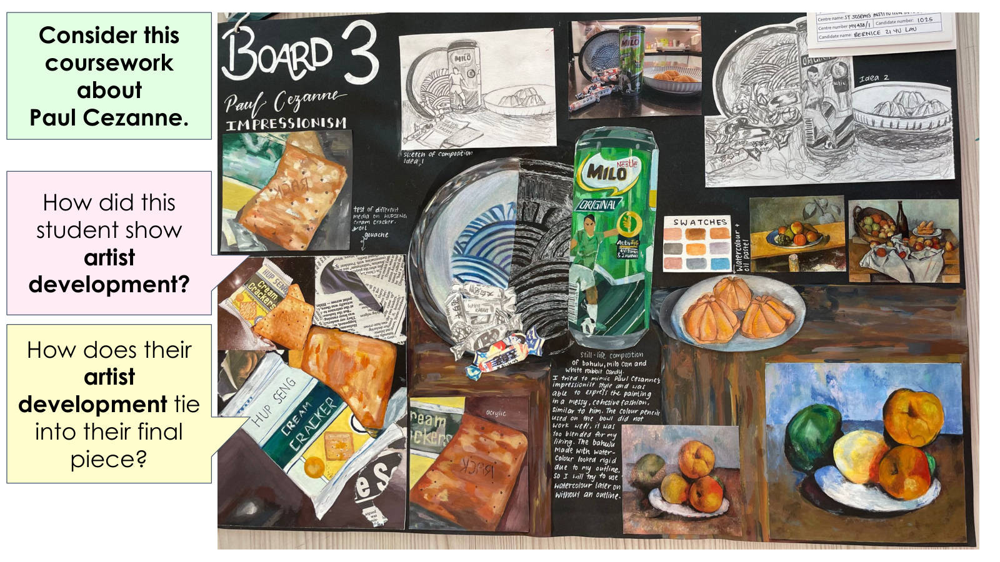
17쪽 · 세잔 참고작 분석하기
이 학생은 작가로서의 발전을 어떻게 보여주었는가?
그 작가 발전이 최종 작품과 어떻게 이어지는가?
다른 학생의 세잔 과제물을 보며, 작가로서 어떻게 발전해 왔는지를 찾아보는 쪽이다
작가 발전 과정이 최종 작품과 어떻게 연결되는지까지 봐야 한다
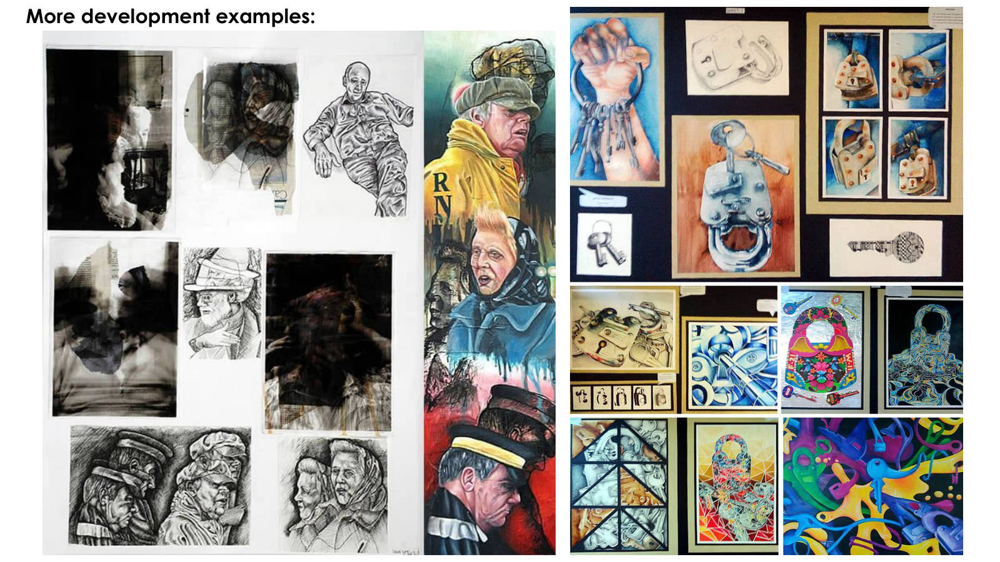
18쪽 · 발전 예시 더 보기
이 쪽은 앞에서 배운 아이디어 발전 과정의 예시를 더 보여주는 쪽이다.
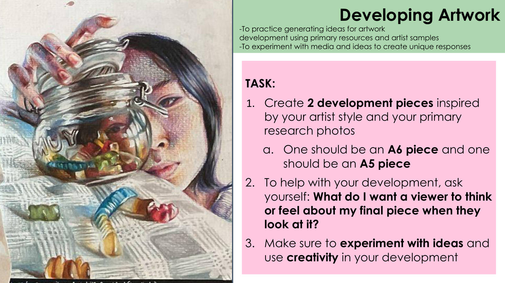
19쪽 · 작품 발전시키기
과제:
1. 자신이 고른 작가의 화풍과 직접 찍은 1차 조사 사진에서 영감을 얻어 발전작 2점을 만든다.
a. 한 점은 A6 크기로, 다른 한 점은 A5 크기로 만든다.
2. 발전에 도움이 되도록 스스로 물어본다: 보는 사람이 내 최종 작품을 볼 때 무엇을 생각하거나 느끼길 바라는가?
3. 발전 과정에서 여러 아이디어를 실험하고 창의성을 쓴다.
- 1차 자료와 작가 작품 예시를 써서 작품 발전 아이디어를 내는 연습을 한다.
- 재료와 아이디어를 실험해 자신만의 독창적인 반응을 만든다.
발전작은 2점이고, 크기가 A6 한 점·A5 한 점으로 정해져 있다.
보는 사람이 무엇을 생각하고 느낄지를 스스로 물으며 발전시키고, 재료와 아이디어를 실험해야 한다.
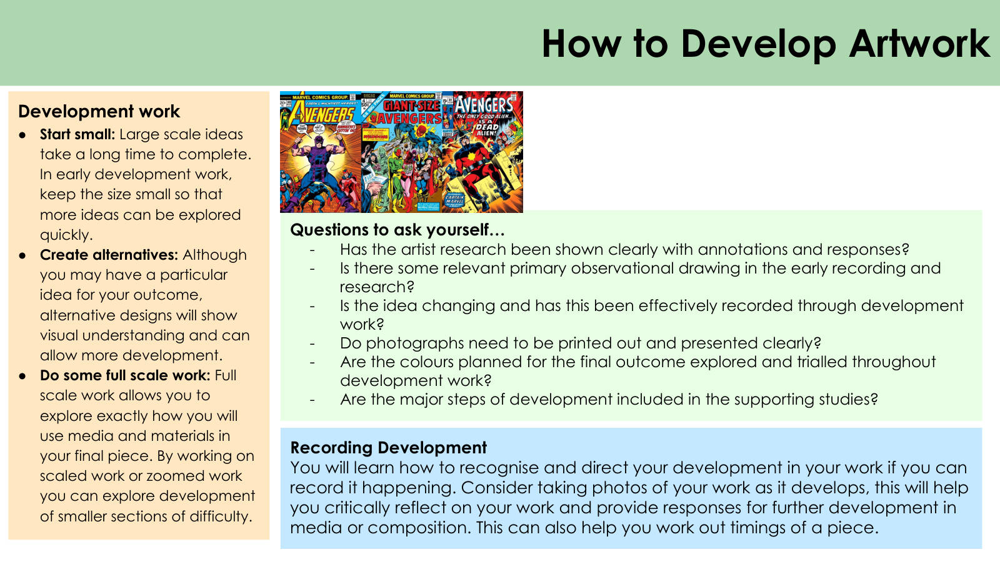
20쪽 · 작품 발전시키는 법
· 작게 시작하라: 큰 규모의 아이디어는 완성하는 데 오래 걸린다.
초기 발전 작업에서는 크기를 작게 유지해서 더 많은 아이디어를 빠르게 탐색할 수 있게 한다.
· 대안을 만들어라: 결과물에 대한 특정한 아이디어가 있더라도, 대안 디자인은 시각적 이해를 보여주고 더 많은 발전을 가능하게 한다.
· 실제 크기 작업도 해보라: 실제 크기 작업은 최종 작품에서 매체와 재료를 정확히 어떻게 쓸지 탐색하게 해준다.
축소한 작업이나 확대한 작업을 하면 어려운 부분의 작은 구간을 발전시켜 볼 수 있다.
스스로에게 물어볼 질문들
- 작가 조사가 주석과 반응으로 분명하게 드러났는가?
- 초기 기록과 조사에 관련 있는 1차 관찰 드로잉이 들어 있는가?
- 아이디어가 변하고 있으며, 그것이 발전 작업으로 효과적으로 기록되었는가?
- 사진을 인쇄해서 분명하게 제시할 필요가 있는가?
- 최종 결과물에 쓸 색을 발전 작업 전체에서 탐색하고 시험해 보았는가?
- 발전의 주요 단계들이 보조 연구에 포함되었는가?
발전 과정 기록하기
발전이 일어나는 것을 기록할 수 있으면, 자기 작업의 발전을 알아보고 방향을 잡는 법을 배우게 된다.
작업이 발전해 가는 모습을 사진으로 찍어 두는 것을 고려하라. 이것은 자기 작업을 비판적으로 되돌아보게 하고, 매체나 구성에서 더 발전할 반응을 준다.
또한 작품의 시간 배분을 가늠하는 데도 도움이 된다.
발전 작업의 세 가지 원칙은 작게 시작하기, 대안 만들기, 실제 크기로 해보기다.
작업 과정을 사진으로 기록해 두면 스스로 되돌아보고 다음 발전 방향과 시간 배분을 정하는 데 쓸 수 있다.
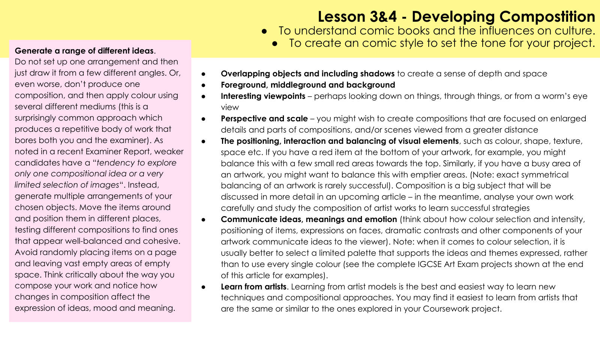
21쪽 · 3~4차시 — 구도 발전시키기
만화책과 그것이 문화에 끼친 영향을 이해한다.
프로젝트의 분위기를 정할 만화 스타일을 만든다.
사물을 겹치고 그림자를 넣어 깊이와 공간의 느낌을 만든다.
전경·중경·배경을 쓴다.
흥미로운 시점 — 위에서 내려다보거나, 무언가를 통해서 보거나, 벌레의 눈높이에서 보는 식이다.
원근과 크기 — 확대된 세부에 초점을 맞춘 구도, 또는 아주 멀리서 본 장면을 만들어도 된다.
색·형태·질감·공간 같은 시각 요소의 배치와 상호작용, 균형이 중요하다. 예를 들어 그림 아래쪽에 빨간 물체가 있다면, 위쪽에 작은 빨간 부분 몇 개를 두어 균형을 잡을 수 있다. 마찬가지로 복잡한 영역이 있다면 비어 있는 영역으로 균형을 잡는다. (단, 정확한 좌우대칭으로 맞추는 것은 거의 성공하지 못한다.) 구도는 큰 주제라 다음 글에서 더 자세히 다루며, 그동안은 자기 작품을 꼼꼼히 분석하고 작가들의 구도를 공부해 성공적인 방법을 익힌다.
생각·의미·감정을 전달한다. 색의 선택과 강도, 사물의 위치, 얼굴 표정, 극적인 대비 같은 요소가 보는 사람에게 어떤 생각을 전하는지 고민한다. 색은 모든 색을 다 쓰기보다 주제를 뒷받침하는 제한된 색조합(팔레트)을 고르는 편이 대개 낫다.
작가에게서 배운다. 작가 작품을 본보기로 삼는 것이 새로운 기법과 구도 방식을 배우는 가장 좋고 쉬운 길이다. 자기 프로젝트에서 다룬 작가와 같거나 비슷한 작가에게서 배우는 것이 가장 쉽다.
여러 가지 다른 아이디어를 만들어라. 배치 하나를 정해 놓고 각도만 바꿔 몇 번 그리지 마라. 더 나쁜 것은 구도 하나를 만들어 놓고 여러 재료로 색만 바꿔 칠하는 것이다(놀랍도록 흔한 방식이며, 반복적인 작품집이 되어 자신도 시험관도 지루하게 만든다). 최근 시험관 보고서에서도 약한 응시자는 “한 가지 구도 아이디어나 아주 적은 수의 이미지만 탐구하는 경향”이 있다고 지적했다. 대신 여러 배치를 만들어라.
깊이는 겹치기·그림자·전경/중경/배경, 그리고 낮거나 높은 시점과 원근·크기 변화로 만든다.
구도 하나를 각도나 재료만 바꿔 반복하지 말고, 서로 다른 배치를 여러 개 만들어야 한다 — 시험관이 지적하는 약점이다.
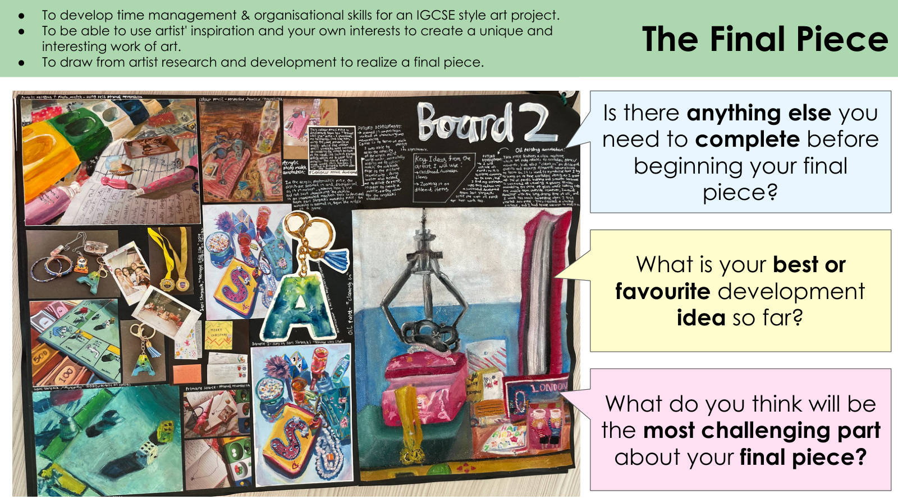
22쪽 · 최종 작품 시작하기
IGCSE 방식의 미술 프로젝트를 위해 시간 관리와 정리 능력을 기른다.
작가에게서 받은 영감과 자신의 관심사를 함께 써서 독창적이고 흥미로운 작품을 만들 수 있게 한다.
작가 연구와 발전 과정을 바탕으로 최종 작품을 완성한다.
최종 작품을 시작하기 전에 끝내야 할 것이 더 있는가?
지금까지 나온 발전 아이디어 중 가장 잘된 것 또는 가장 마음에 드는 것은 무엇인가?
최종 작품에서 가장 어려울 것 같은 부분은 무엇인가?
이 쪽은 최종 작품 단계의 학습 목표 세 가지를 정리한 쪽이다. 시간 관리, 작가 영감과 내 관심사의 결합, 작가 연구와 발전 과정에서 최종 작품으로 이어가기다.
아래 세 질문은 최종 작품을 시작하기 전에 스스로 점검하라는 것이다. 남은 준비물, 가장 좋은 발전 아이디어, 가장 어려울 것 같은 부분을 미리 생각해 둔다.
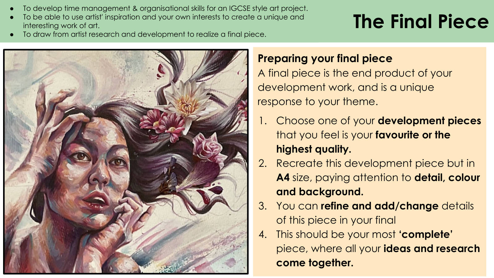
23쪽 · 최종 작품 준비하기
IGCSE 방식 미술 과제를 위한 시간 관리와 정리 능력을 기른다.
작가에게서 받은 영감과 자신의 관심사를 함께 써서 독특하고 흥미로운 작품을 만들 수 있게 한다.
작가 연구와 발전 작업에서 끌어와 최종 작품을 완성한다.
최종 작품 준비하기
최종 작품은 발전 작업의 최종 결과물이며, 자기 주제에 대한 고유한 응답이다.
1. 자신의 발전 작업 중 가장 마음에 들거나 가장 완성도 높은 것 하나를 고른다.
2. 그 발전 작업을 A4 크기로 다시 그리되, 세부·색·배경에 신경 쓴다.
3. 최종 작품에서 이 작품의 세부를 다듬거나 더하거나 바꿔도 된다.
4. 이것은 자신의 모든 아이디어와 연구가 모이는 가장 '완성된' 작품이어야 한다.
최종 작품은 새로 만드는 게 아니라, 발전 작업 중 제일 좋은 하나를 골라 A4 크기로 다시 그려 완성도를 높이는 것이다.
다시 그릴 때 세부·색·배경을 신경 쓰고, 필요하면 다듬거나 바꿔도 되며, 모든 아이디어와 작가 연구가 여기서 하나로 모여야 한다.
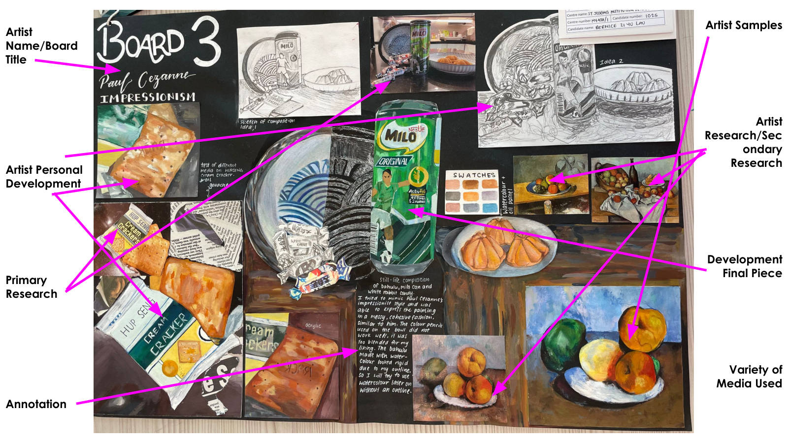
24쪽 · 미술 채점 기준 항목
작가 개인 발전
1차 조사
주석(설명 달기)
작가 샘플
작가 조사 / 2차 조사
발전 과정과 최종 작품
다양한 재료 사용
보드에 들어가야 할 항목들이 나열된 쪽이다
조사는 직접 하는 1차 조사와 자료로 하는 2차 조사로 나뉜다
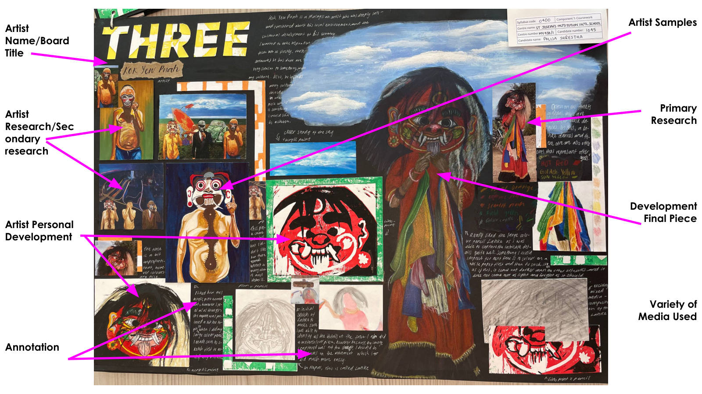
25쪽 · 미술 프로젝트 채점 항목
작가 조사 / 2차 자료 조사
작가 개인 발전
주석
작가 작품 예시
1차 조사
발전 / 최종 작품
다양한 재료 사용
작가 조사는 2차 조사(secondary research)에 해당하고, 직접 모은 자료는 1차 조사(primary research)로 나뉜다.
작가 이름과 보드 제목, 주석(annotation), 다양한 재료 사용까지 갖춰야 하는 항목으로 적혀 있다.
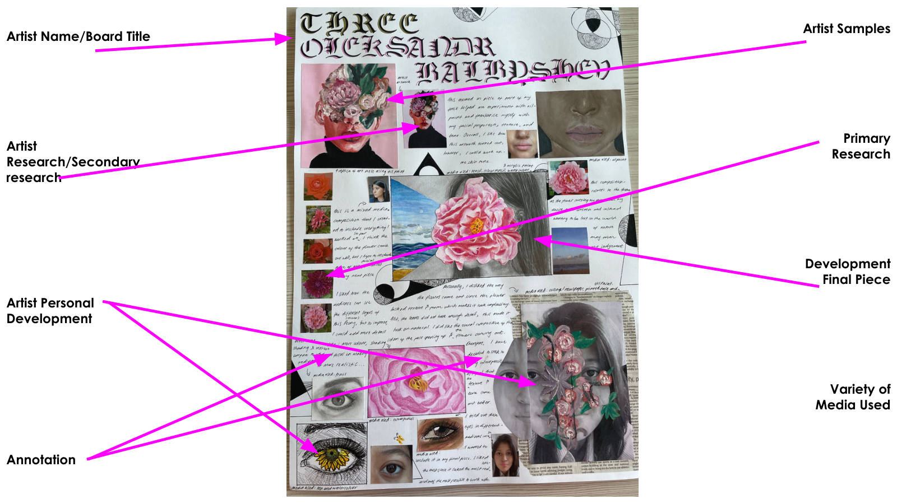
26쪽 · 작품집 한 쪽 구성표
작가 조사 / 2차 조사
작가 개인 발전
주석
작가 예시 작품
1차 조사
발전 과정
최종 작품
사용한 다양한 매체
작품집 한 쪽에 무엇을 넣어야 하는지 항목별로 배치를 보여주는 쪽이다
조사(1차·2차), 발전 과정, 주석, 최종 작품이 모두 한 쪽 안에 들어가야 한다
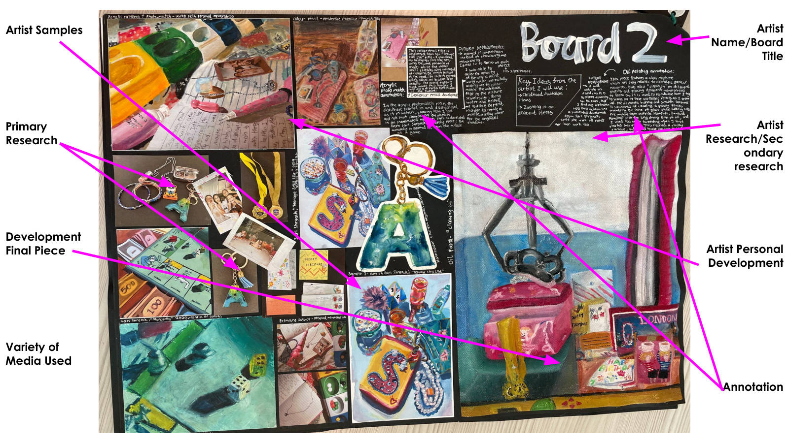
27쪽 · 미술 과제 평가 항목
작가 조사 / 2차 조사
작가 개인 발전
주석
작가 작품 예시
1차 조사
발전 과정 — 최종 작품
사용한 다양한 매체
작가 보드에 반드시 들어가야 할 항목들을 나열한 쪽이다.
조사는 1차 조사(직접 관찰)와 2차 조사(작가 연구)로 나뉘고, 발전 과정을 거쳐 최종 작품으로 이어진다.
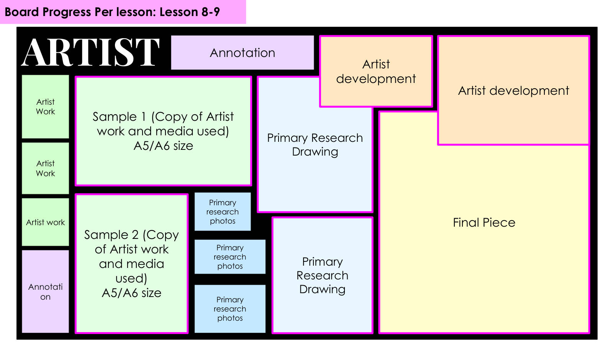
28쪽 · 작품판 구성 배치도
Artist Work (작가 작품)
Artist work (작가 작품)
Artist Work (작가 작품)
Annotation (주석)
Final Piece (최종 작품)
Annotation (주석)
Primary Research Drawing (1차 조사 드로잉)
Artist development (작가 연구 발전)
Primary research photos (1차 조사 사진)
Board Progress Per lesson: Lesson 8-9 — 수업별 보드 진행: 8~9차시
Sample 1 (Copy of Artist work and media used) — 샘플 1: 작가 작품 모사와 사용한 재료
A5/A6 size — A5 또는 A6 크기
Sample 2 (Copy of Artist work and media used) — 샘플 2: 작가 작품 모사와 사용한 재료
A5/A6 size — A5 또는 A6 크기
Primary research photos (1차 조사 사진)
Primary research photos (1차 조사 사진)
Primary Research Drawing (1차 조사 드로잉)
Artist development (작가 연구 발전)
8~9차시 보드에는 작가 작품, 작가 작품 모사 샘플 2개(A5/A6 크기), 1차 조사 사진, 1차 조사 드로잉, 작가 연구 발전, 주석, 최종 작품이 들어간다
샘플 1·2는 작가 작품을 따라 그린 것과 거기 쓴 재료를 함께 보여주는 칸이다
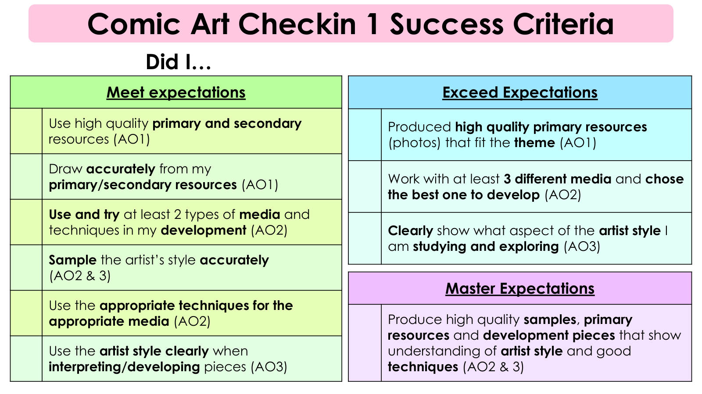
29쪽 · 코믹아트 1차 점검 성취기준
나는 …했는가?
기대 충족(Meet expectations)
질 높은 1차·2차 자료를 쓴다 (AO1)
내 1차/2차 자료를 보고 정확하게 그린다 (AO1)
발전 과정에서 최소 2가지 재료와 기법을 써 보고 시도한다 (AO2)
작가의 스타일을 정확하게 샘플로 따라 해 본다 (AO2 & 3)
그 재료에 알맞은 기법을 쓴다 (AO2)
작품을 해석·발전시킬 때 작가 스타일을 분명하게 쓴다 (AO3)
기대 초과(Exceed Expectations)
주제에 맞는 질 높은 1차 자료(사진)를 만들어 냈다 (AO1)
최소 3가지 서로 다른 재료로 작업하고, 발전시킬 가장 좋은 것을 골랐다 (AO2)
내가 공부하고 탐구하는 작가 스타일의 어떤 면인지 분명하게 보여 준다 (AO3)
기대 통달(Master Expectations)
작가 스타일에 대한 이해와 좋은 기법이 드러나는 질 높은 샘플·1차 자료·발전 작품을 만든다 (AO2 & 3)
점검 1의 채점 기준이 충족·초과·통달 세 단계로 나뉘고, 각 항목 뒤 AO1·AO2·AO3는 어느 평가 영역에 해당하는지를 가리킨다
충족은 자료 2가지 재료, 초과는 3가지 재료와 그중 최선을 고르기, 통달은 작가 스타일 이해가 드러나는 완성도까지 요구한다
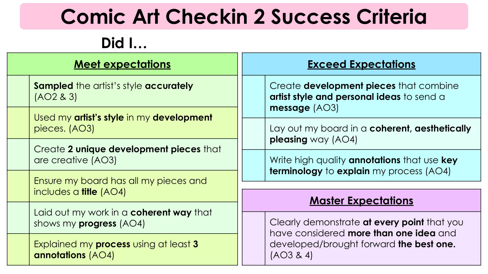
30쪽 · 코믹아트 2차 점검 성공 기준
나는 ~을 했는가?
기대 충족
작가의 화풍을 정확하게 샘플링했다 (AO2 & 3)
내 발전 작업물에 그 작가의 화풍을 사용했다 (AO3)
창의적인 독창적 발전 작업물 2개를 만들었다 (AO3)
내 보드에 내 작업물이 모두 들어 있고 제목도 포함되어 있게 했다 (AO4)
내 진행 과정이 드러나도록 작업물을 일관성 있게 배치했다 (AO4)
내 과정을 주석 3개 이상으로 설명했다 (AO4)
기대 초과
작가의 화풍과 내 개인적인 생각을 결합해 메시지를 전달하는 발전 작업물을 만든다 (AO3)
보드를 일관성 있고 보기 좋게 배치한다 (AO4)
핵심 용어를 써서 내 과정을 설명하는 높은 수준의 주석을 쓴다 (AO4)
최고 수준
모든 지점에서 한 가지 이상의 아이디어를 고민했고 그중 가장 좋은 것을 발전시켜 앞으로 가져왔음을 분명히 보여준다 (AO3 & 4)
점수 단계가 기대 충족 → 기대 초과 → 최고 수준 셋으로 나뉘고, 각 항목 뒤 AO2·AO3·AO4는 어떤 평가 항목에 해당하는지를 나타낸다.
기대 충족의 필수 조건은 정확한 화풍 샘플링, 발전 작업물 2개, 제목이 있는 보드, 주석 3개 이상이다.